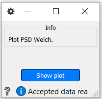
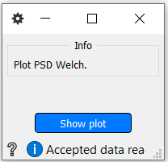

PlotWelchPSD
Plot the power spectral density across channels.
Inputs
- (psds, freqs)
- psds - The power spectral densities.
- freqs - The frequencies.
Use

Press the Show plot button to display the graph.
Plot the power spectral density across channels.
Inputs
Use

Press the Show plot button to display the graph.